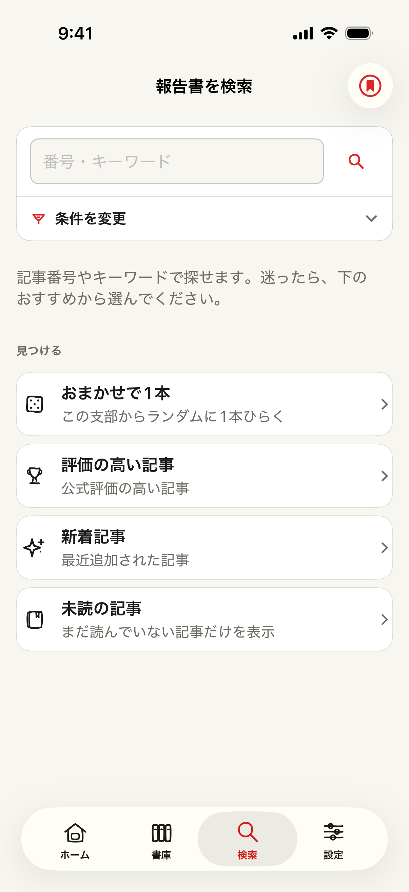
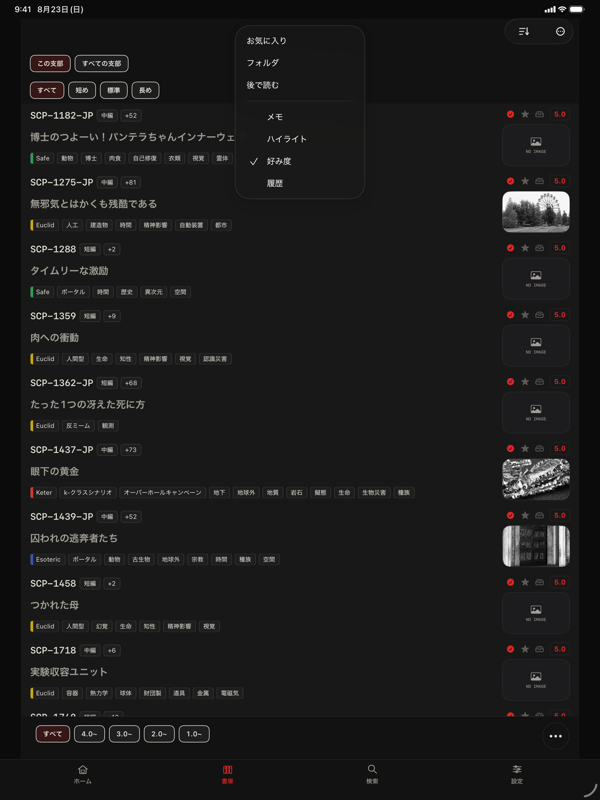

SEARCH / FREE
検索はすべて無料
番号・キーワードから始め、支部、文書種別、タグ、Object Class、本文、読書状態などを組み合わせられます。
● THIS SITE / SCP ARTICLE SEARCH
SCP-JP、翻訳SCP、Tales、Canon、GoIを、番号・タイトル・タグから検索できます。文書種別、Object Class、長さ、Wiki評価を使った絞り込みにも対応しています。
SCP Docs app
SCP Docsは、SCP記事を探して読むためのiPhone・iPad向けアプリです。読みかけの記事へ戻り、気になった記事をライブラリで整理できます。


SEARCH / FREE
番号・キーワードから始め、支部、文書種別、タグ、Object Class、本文、読書状態などを組み合わせられます。

ORGANIZE / PREMIUM
プレミアムでは、お気に入り・後で読むを各200件まで保存できます。フォルダ整理と、本文を3色で残して元の位置へ戻るハイライトにも対応します。
Site guide
SCP Docsは記事の検索と読書状態の整理を支援します。記事本文、著者表示、ライセンス条件は各提供元サイトの表示が優先されます。